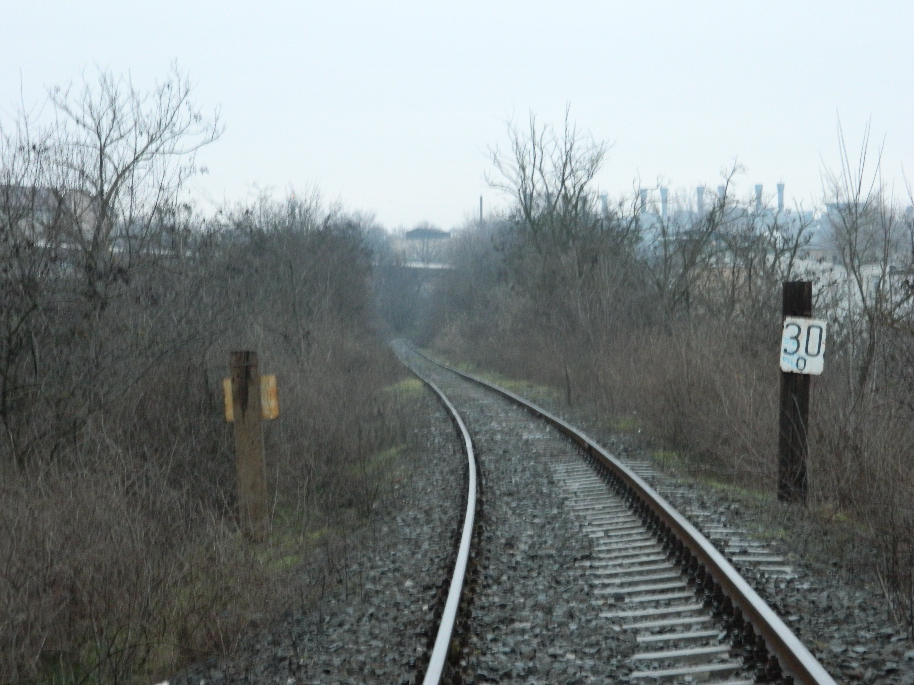
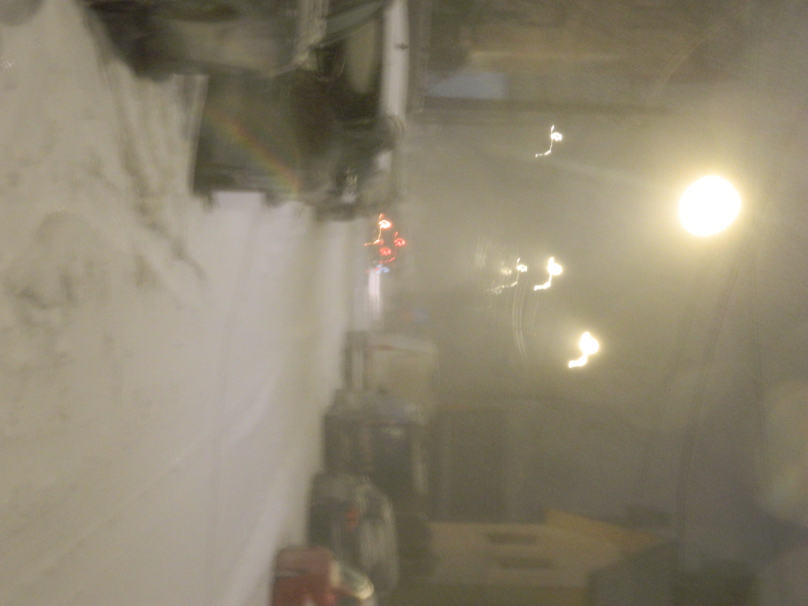

> ls album
Photo Album
Small photo album with pictures i made. No matter how the picture is, there still a story behind it.




> ls album
Small photo album with pictures i made. No matter how the picture is, there still a story behind it.

